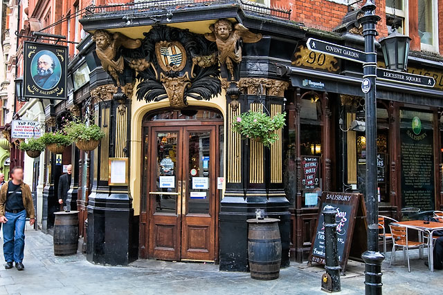
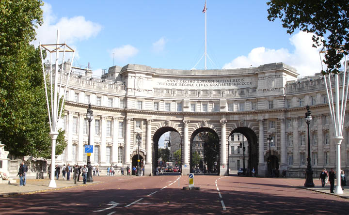
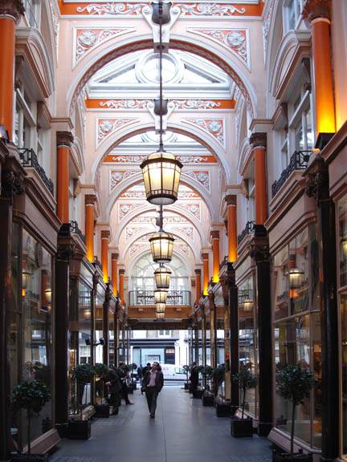
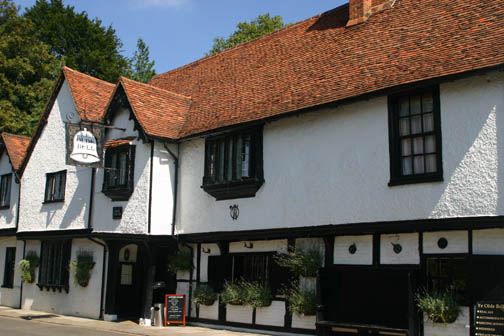

The Salisbury Pub (corner of St.Martin's Lane & St.Martin's Court) where Poirot is apprehended by Jesmond's men.

Admiralty Arch through which Poirot is driven on his way to the Foreign Office.

The Adelphi Building used here as 'The Adelphi Hotel' where Prince Farouk stays. (Also used in 'The Plymouth Express').

Royal Arcade - 28 Old Bond St. London. Location of the Antiquity Shop which Colonel Lacey visits.

Ye Olde Bell, Hurley, Berkshire. Prince Farouk stays here too.

Joldwynds is a Grade II 'Moderne' House in Holmbury St Mary, Surrey. It was designed by architect Oliver Hill for Wilfred Greene, 1st Baron Greene. Also used in 'The Disappearance of Mr.Davenheim'. It was Hill's first 'Moderne' commission before that of the Midland Hotel, Morecambe, Lancashire (which featured in 'Double Sin').